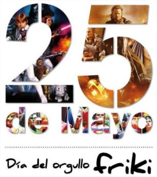

25 de mayo, día del Orgullo Friki
El día 25 de mayo se celebra internacionalmente el día del orgullo Geek (en España el Orgullo Friki), que conmemora el lanzamiento, en 1977, de Star Wars, aunque curiosamente el día de Star Wars no se celebra este día.
El Origen del Movimiento Friki
Los primeros intentos de un Día del Orgullo Geek fueron realizados por Tim McEachern, quien entre 1998 y el 2000 comenzaron un evento llamado Geek Pride Festival (Festival del Orgullo Friki) en un bar de Albany, Nueva York. Pero en aquel momento ni estaba muy bien organizado ni tenía demasiada repercusión a nivel mundial.

Curiosamente fue en España, en el año 2006, donde el movimiento volvió a coger fuerza, gracias al bloguero Germán Martinez, conocido como Señor Buebo, quien organizó la primera concentración oficial en Madrid y a la que acudieron más de 300 personas. Ese mismo día se creó un manifiesto que incluía la lista de derechos y deberes de todo buen Friki. Solo dos años después, en 2008, se celebró oficialmente por primera vez el día del orgullo Geek en EEUU, seguido en años posteriores por ciudades de todo el mundo.